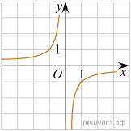
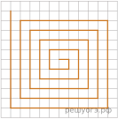
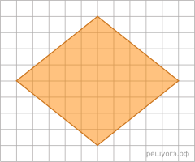
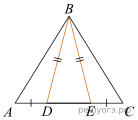

1. Для объектов, указанных в таблице, определите, какими цифрами они обозначены на плане. Заполните таблицу, в ответ запишите последовательность четырех цифр.
| Объекты | жилой дом | сарай | баня | теплица |
| Цифры |
Ответ:
2.
Показать полностьюТротуарная плитка продается в упаковках по 4 штуки. Сколько упаковок плитки понадобилось, чтобы выложить все дорожки и площадку перед гаражом?
Ответ:
3.
Показать полностьюНайдите площадь, которую занимает жилой дом. Ответ дайте в квадратных метрах.
Ответ:
4.
Показать полностьюНайдите расстояние от жилого дома до гаража (расстояние между двумя ближайшими точками по прямой) в метрах.
Ответ:
5.
Показать полностьюХозяин участка планирует устроить в жилом доме зимнее отопление. Он рассматривает два варианта: электрическое или газовое отопление. Цены на оборудование и стоимость его установки, данные о расходе газа, электроэнергии и их стоимости даны в таблице.
| Нагреватель (котел) | Прочее оборудование и монтаж | Сред. расход газа / сред. потребл. мощность | Стоимость газа / электро-энергии | |
| Газовое отопление | 24 тыс. руб. | 18 280 руб. | 1,2 куб. м/ч | 5,6 руб./куб. м |
| Электр. отопление | 20 тыс. руб. | 15 000 руб. | 5,6 кВт | 3,8 руб./(кВт·ч ) |
Обдумав оба варианта, хозяин решил установить газовое оборудование. Через сколько часов непрерывной работы отопления экономия от использования газа вместо электричества компенсирует разность в стоимости покупки и установки газового и электрического отопления?
Ответ:
6. Вычислите
Ответ:
7.На координатной прямой отмечено число a. Какое из утверждений относительно этого числа является верным? В ответе укажите номер правильного варианта.
1) a + 4 > 0
2) a + 5 < 0
3) 2 - a > 0
4) 3 - a < 0
Ответ:
8. Найдите значение выражения при
Ответ:
9.Решите уравнение:
Если корней несколько, запишите их в ответ без пробелов в порядке возрастания.
Ответ:
10. Стрелок 4 раза стреляет по мишеням. Вероятность попадания в мишень при одном выстреле равна 0,5. Найдите вероятность того, что стрелок первые 3 раза попал в мишени, а последний раз промахнулся.
Ответ:
11.Найдите значениеkпо графику функции изображенному на рисунке.

Ответ:
12.Площадь ромба
можно вычислить по формуле
где
— диагонали ромба (в метрах). Пользуясь этой формулой, найдите диагональ
если диагональ
равна 30 м, а площадь ромба 120 м2.
Ответ:
13.Укажите неравенство, которое не имеет решений.
В ответе укажите номер правильного варианта.
1) x2 − 64 ≤ 0
2) x2 + 64 ≥ 0
3) x2 − 64 ≥ 0
4) x2 + 64 ≤ 0
Ответ:
14.На клетчатой бумаге с размером клетки нарисована «змейка», представляющая собой ломаную, состоящую из четного числа звеньев, идущих по линиям сетки. На рисунке изображен случай, когда последнее звено имеет длину 10. Найдите длину ломаной, построенной аналогичным образом, последнее звено которой имеет длину 120.

Ответ:
15.Высота равностороннего треугольника равнаНайдите его периметр.
Ответ:
16.Боковая сторона равнобедренного треугольника равна 4. Угол при вершине, противолежащий основанию, равен 120°. Найдите диаметр окружности, описанной около этого треугольника.
Ответ:
17.Найдите площадь кругового сектора, если длина ограничивающей его дуги равна 6π, а угол сектора равен 120°. В ответе укажите площадь, деленную на π.
Ответ:
18.На клетчатой бумаге с размером клетки 1 × 1 изображен ромб. Найдите площадь этого ромба.

Ответ:
19.Какие из следующих утверждений верны?
1) Если при пересечении двух прямых третьей прямой внутренние накрест лежащие углы составляют в сумме 90°, то эти две прямые параллельны.
2) Если угол равен 60°, то смежный с ним равен 120°.
3) Если при пересечении двух прямых третьей прямой внутренние односторонние углы равны 70° и 110°, то эти две прямые параллельны.
4) Через любые три точки проходит не более одной прямой.
Если утверждений несколько, запишите их номера в порядке возрастания.
Ответ:
20.Сократите дробь
Решения заданий с развернутым ответом не проверяются автоматически. Запишите решение на бумаге.
На следующей странице вам будет предложено проверить их самостоятельно.
21.Из пунктов А и В, расстояние между которыми 19 км, вышли одновременно навстречу друг другу два пешехода и встретились в 9 км от А. Найдите скорость пешехода, шедшего из А, если известно, что он шел со скоростью, на 1 км/ч большей, чем пешеход, шедший из В, и сделал в пути получасовую остановку.
Решения заданий с развернутым ответом не проверяются автоматически. Запишите решение на бумаге.
На следующей странице вам будет предложено проверить их самостоятельно.
22.Постройте график функции
и определите, при каких значениях m прямая
y = m
имеет с графиком ровно одну общую точку.
Решения заданий с развернутым ответом не проверяются автоматически. Запишите решение на бумаге.
На следующей странице вам будет предложено проверить их самостоятельно.
23.Биссектрисы углов A и B параллелограмма ABCD пересекаются в точке K. Найдите площадь параллелограмма, если BC = 19, а расстояние от точки K до стороны AB равно 7.
Решения заданий с развернутым ответом не проверяются автоматически. Запишите решение на бумаге.
На следующей странице вам будет предложено проверить их самостоятельно.
24.На стороне AC треугольника ABC выбраны точки D и E так, что отрезки AD и CE равны (см. рис.). Оказалось, что отрезки BD и BE тоже равны. Докажите, что треугольник ABC — равнобедренный.
